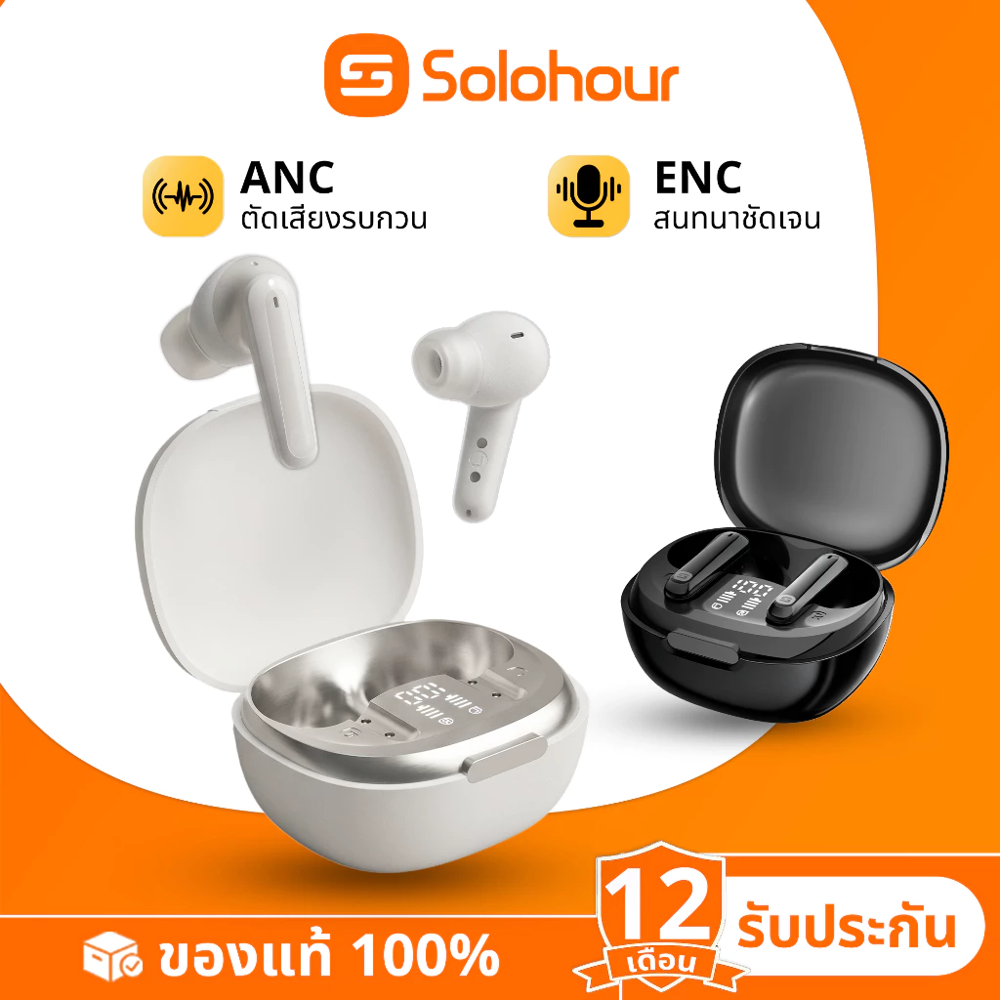

1Solohour ST1 TWS Adaptive ANC ENC
ราคา Shopee: 383 บาท
ถูกสุดในลิสต์แต่มาพร้อม Adaptive ANC และ ENC ตัดเสียงรบกวนได้จริง เหมาะกับคนงบน้อยที่อยากได้หูฟังตัดเสียงสำหรับประชุม WFH โดยไม่ต้องจ่ายแพง
- ประเภทTWS Earbuds
- ANCAdaptive ANC
- ไมค์ENC ตัดเสียงรบกวน
- การเชื่อมต่อBluetooth
ข้อดี
- ราคาถูกสุดในลิสต์
- มี ANC และ ENC ในราคานี้
- เหมาะประชุมออนไลน์
ข้อเสีย
- แบรนด์ไม่คุ้นเคย
- after-sales อาจจำกัด
เหมาะสำหรับ: คนงบน้อยที่อยากได้หูฟังตัดเสียงสำหรับประชุม WFH
ดูราคาล่าสุดบน Shopee →